<div class="wrapper">
  
  <div class="row">   
    <div class="col-4 myface sr-left">
      
      
    </div>
    <div class="col-8 col-text aboutme sr sr-right">      
      <p><span class="drop_cap">M</span> y name is Simon. I'm an independent Designer and Illustrator living in Amsterdam. I enjoy working with clients that want to give their brand or product a unique character. </p>
      <p>I am always looking for interesting projects and freelance opportunities.</p>
      <p><em>Do you have one?</em></p>
      <a class="button" href="mailto:simon@floter.design">Email me</a>
    </div>
  
  </div>

</div>